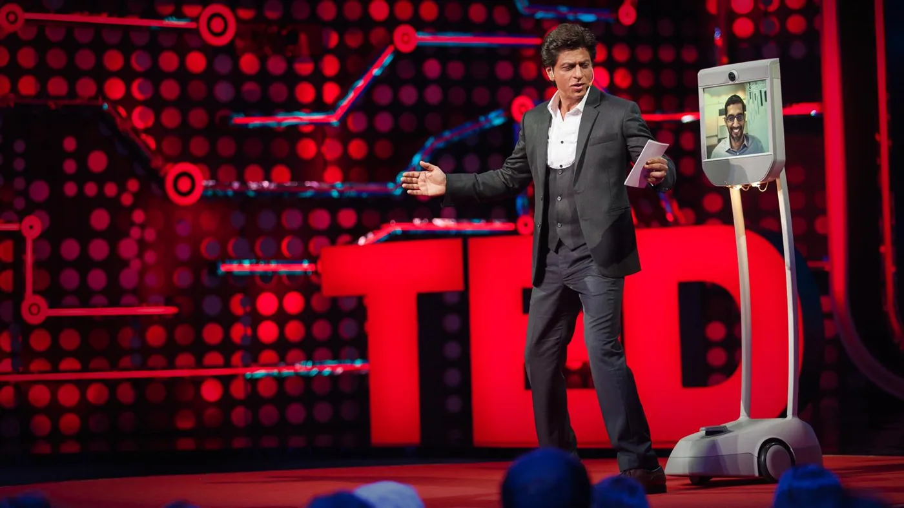
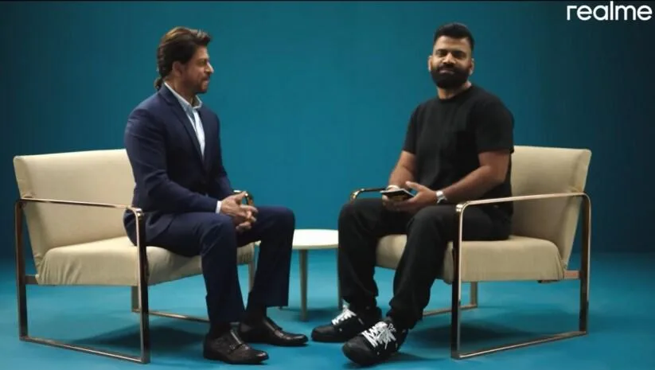
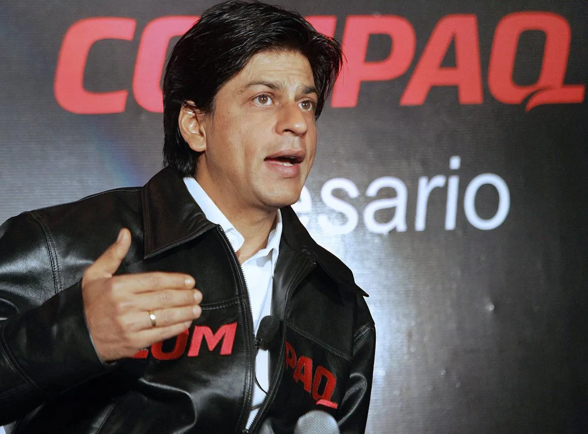

The Final Thesis · section 13 of 92
ACT V — THE KINGDOM BEFORE KING
17. The technology thread never quite disappears



6
And now, the story circles back to technology.
The man associated with RA.ONE, G.ONE, interactive games, digital campaigns, and an early internet-era entertainment venture is once again connected to the technology industry.
The FLAM development

FLAM — AI-powered interactive content
Reported September 2026
In September 2026, FLAM announced a $40 million Series B funding round led by QED Investors, with Shah Rukh Khan among the participating investors. The company describes its work as AI-powered interactive content, with applications including marketing, entertainment, and fan engagement.

flamapp.ai
+1
This is a particularly interesting development in the context of the earlier campaigns.
The technology categories that could have seemed experimental in 2011—interactive characters, digital fan participation, immersive media, and entertainment-based technology—now sit alongside rapidly developing AI and interactive-content businesses.
FLAM's announcement establishes his participation as an investor. It does not establish that he is developing a KING campaign with FLAM, that the company is working on a Shah Rukh Khan digital twin, or that any specific project is under development.
But the connection between his historical interest in technology and his current investment activity makes the question worth asking.
18. SRKWORLD: the unfinished thread
An open question